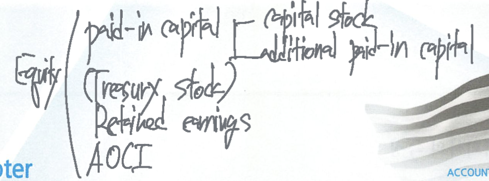

Stockholders’ Equity

Shareholders’ equity
Shareholders’ equity = owners’ equity = residual interest = ownership interest = net assets = assets - liabilities

paid-in capital (contributed capital - 불입자본)
- 주식발행의 대가로 주주들이 납입한 현금이나 자산의 총액
retained earnings (이익잉여금)
- 사내에 유보된 당기순이익의 누적금액
주주의 일반적인 권리
- 소유지분 만큼 배당을 받을 수 있는 권리
- voting rights - 의결권을 행사하여 경영에 참가할 수 있는 권리
- residual claim - 청산시 잔여재산을 분배받을 수 있는 권리
- preemptive right (선취권) - 동종의 신주발행시 증자에 우선적으로 참가할 수 있는 권리
- 다른 주주의 동의 없이 주식을 처분할 수 있는 권리
주식회사(corporation)의 특징
- 규모가 큰 기업이 대부분이다
- state corporate law의 영향을 받는다
- 소유하는 주식수에 비례하여 주주의 권리를 행사한다
- 지분의 양도 및 이전이 용이하다
- 다양한 형태의 주식을 발행하여 자본 조달과 자본 축적이 유리하다 (common stock, preferred stock)
Corporation
A business organized as a legal entity separate and distinct from its owners under state corporation law
classifications
purpose에 따른 구분
- profit corporation
- non-profit corporation
ownership에 따른 구분
- publicly held corporation
- privately (closely) held corporation
advantages
separate legal existence - 소유주와는 구분된 실체
- corporation is an entity separate and distinct from its owners
limited liability of stockholders - 회사 채무에 대한 주주들의 유한책임
transferable ownership rights - 소유권 양도가 용이
ability to acquire capital - 주식발행을 통한 자금조달 및 자본축적의 용이
continuous life - 소유주의 사망, 무능력과 무관한 계속기업의 유지
disadvantages
government regulations - proprietorships and partnerships에 비하여 정부규제가 많음
additional taxes - 주주들의 배당에 대한 세금 이외에도 법인 자체의 추가적인 법인세부담 (corporation tax)이 있다
corporation management - 소유와 경영이 분리되어 소유주가 직접적인 경영을 할 수 없다
회사설립과 관련된 사항
the charter (the articles of incorporation ) - 정관
the by-laws - 사규, 기업의 업무수행과 관련한 내부규칙과 절차를 정해놓은 것
organization expense (창업비) - legal and state fees, promotional expenditures, payment to obtain a charter 등은 발생시점에 비용 처리
stock certificate (주권)
A certificate shows the company name, stockholders names, the class and special feature of stock, the number of shares owned, etc.
주식발행과 관련된 사항
authorized shares (수권주식수)
the number of shares that a corporations’ charter allows it to sell
수권주식수는 회사 정관에 기재되어 기업입장에서 발행가능한 전체 주식수를 의미하고 회계처리는 필요하지 않으며 주주지분에 직접적인 영향을 미치지 않는다.

주식을 발행하는 방법 - directly or indirectly (underwriter)
sell directly (closely held corporations) - 투자자들에게 직접 주식을 발행
sell indirectly (publicly held corporations) - 금융기관들에게 일정한 수수료를 지급하면서 주식을 약정된 가격에 일괄매각하고 금융기관은 인수한 주식들을 투자자들에게 재판매하는 형태의 주식발행
market value of stock (주식의 시가)
미래 예상이익, 배당금, 성장률 등 기타 기업의 경제적 요인 등을 반영하여 조직화된 시장에서 매매하면서 결정된 가격
par value stock vs. no-par value stock
Par value stock (액면주식)
- 정관에서 한 주당가치를 부여한 주식
- 채권자보호를 위해 기업실체내부에 반드시 보유해야 할 legal capital
- 주식의 시가와는 직접적인 연관은 없다
no-par value stock (무액면주식)
- 정관에서 한 주당 가치를 부여하지 않는 자본
- 투자자의 요구에 따라 어떤 가격으로 발행이 가능하다
legal capital (법정자본)
- 채구너자 보호를 위해 기업실체가 반드시 유지해야 하는 최소한의 자본
stated value (표시가액)
- the amount per share assigned by the board of directors to
no-par value stockthat becomes legal capital per share
classes of stock (주식의 종류)
- common stock, preferred stock, etc.
Classes of stock

common stock
보통주는 우선주에 대한 상대적인 의미에서 표준이 되는 주식
preferred stock
Capital stock that has some contractual preferences over common stock in certain cases.
priority over common stock
dividend preferences - cumulative preferred stock
liquidating preference - a priority as to net assets in the event of liquidation
그러나 일반적으로 우선주주는 voting rights가 없다.
우선주의 종류
cumulative preferred stock (누적적 우선주)
- 보통주주들에게 당기 배당금을 지급하기 전에 우선주의 과거 누적미지급배당 (dividends in arrears, 연체배당금)과 당기배당금을 먼저 지급받을 수 있는 우선주
- 이러한 연체배당금은 이사회나 주주총회에서 배당을 선언하기 전까지는 부채가 아니며 주석공시사항이다
convertible preferred stock (전환우선주)
- 우선주 중에서 전환권이 행사되면 보통주로 전환할 수 있는 우선주
callable preferred stock (상환우선주)
- 특정한 미래시점에 약정된 가격으로 유통 중인 우선주를 발행회사가 상환할 수 있는 권리가 부여된 우선주
accounting for issues of common stock
주식의 발행은 paid-in capital accounts에만 영향을 미친다
par value stock

no-par value stock


issuing stock for services or non-cash assets
현물출자로 취득한 자산의 취득원가는 the fair market value of the consideration given up 또는 the fair market value of the consideration received 중에서 보다 명확한 금액을 취득원가로 인식한다.

Treasury stock
A corporation’s own stock that has been issued and reacquired by the corporation but not retired.
자기주식 취득 목적
- 종업원들에게 보상차원의 주식 발행
- 저평가된 주식을 매입하여 주가상승을 기대하기 위해
- 유통주식수를 감소시켜 EPS의 증가를 위해
- 적대적 인수합병, 경영권방어 목적
outstanding shares = issued shares - treasury stocks

Treasury stock은 자산이 아니라 contra stockholders’ equity account (자본의 차감 항목)이다.
T/S의 취득은 common stock에는 영향이 없지만 (자본금은 issued shares로 계산되어 자기주식의 취득은 outstanding shares가 감소되지만 issued shares는 불변) 전체 stockholder’s equity의 감소를 가져온다.
자기주식 처분

paid-in capital from treasury stock (자기주식처분이익)은 주주와의 자본거래에서 발생한 손익이므로 I/S에 반영되는 손익거래로 처리하지 않고 paid-in capital 즉, 자본에 반영한다.

자기주식을 취득원가보다 낮게 처분하는 경우 paid-in capital from treasury stock이 있으면 그 금액부터 먼저 상계하고 잔액이 부족하면 주주에 대한 배당으로 간주하여 retained earning을 감소시킨다.


capital surplus = additional paid-in capital
earned surplus = retained earnings
Retained earnings
Accumulated net income that is retained for use in the business. net loss가 발생 될 경우에는 deficit으로 인식하며 retained earnings의 debit balance로 표시한다.
Retained earnings restrictions
법률 등에 의해 이익잉여금을 배당에 사용할 수 없는 경우에는 그 제한된 내용을 주석으로 공시한다.
legal restrictions / contractual restrictions / voluntary restrictions (plant expansions)
Retained earnings statement
It shows the changes in retained earnings during the year

prior period adjustments (전기오류수정손익)
The correction of an error in previously issued F/S
과거 회계기간의 잘못된 손익을 당기에 발견했을 경우에는 장부는 이미 마감 (closing) 되었으므로 당기에 revenue, expense, net income을 수정할 수 없고 retained earnings에 직접 수정사항을 반영한다.

Dividends
A corporation’s distribution of cash or stock to its stockholders on proportional basis.
cash, stock, property, or scrip (a promissory note), liquidating dividends
Cash dividends
현금배당의 3가지 요건
retained earnings 범위 내에서 지급adequate casha declaration of dividends

Stock dividends
Proportional distribution to stockholders of the corporation’s own stock.
주식배당을 실시하면 발행주식수는 증가되지만 총자본, 총자산 및 지분율의 변동은 없다 → but, decrease in R/E + increase in paid-in capital = 자본은 동일
주식배당의 목적
현금유출 없이 주주의 배당요구 충족
주식발행으로 인한 발행주식수의 증가와 주식가격하락으로 인한 주식의 시장성 (유통성) 증가
이익잉여금의 영구적인 자본화
주식배당의 종류
small stock dividend(less than 20~25%of the corporation’s issued stock) - dividend isthe FMV per share(시가배당)large stock dividend(more than 20~25%of the corporation’s issued stock) - dividend ispar or stated value(액면배당)
회계처리 - small stock dividend


liquidating dividends (청산배당)

청산배당이란 배당의 원천이 R/E가 아닌 경우의 배당을 말한다. 즉, 취득이후 발생한 R/E를 초과하여 배당을 지급하는 경우의 배당이며 이러한 청산배당은 profit을 원천으로 하는 배당이 아니라 a return of the stockholder’s investment (투자지분의 반환)으로 처리한다.
stock split
1주당 주식의 시가를 낮추어 유동성을 높일 목적으로 주주들의 주식소유비율에 비례하여 일정한 주식을 추가적으로 발행하는 것
2-for-1 stock split (1주를 2주로 분할하는 것) - one share of $10 par value stock is exchanged for 2 shares of $5 par value stock.
주식분할은 주식의 액면금액 감소와 발행주식수의 증가만을 가져오지만, total paid-in capital, R/E, total shareholder’s equity 어느 것에도 영향을 미치지 않으므로 분개 (journalizing)이 필요없다.
Reverse stock splits (주식 병합)
발행 주식수를 감소시키기 위해서 액면 $50인 2주를 액면 $100인 1주로 병합하는 것을 말하며 발행주식수의 감소와 주당 액면금액의 증가를 가져오지만 자본금 및 기타 자본의 구성요소에는 전혀 영향을 미치지 않는다.
Earnings per share (EPS)
the net income earned by each share of outstanding common stock.
기업의 수익성 (profitability) 및 경영성과를 측정하는 상대적 기준 → 절대적 기준은 net income을 사용
\[ EPS = \frac{\text{net income} - \text{preferred stock dividends}}{\text{weighted average of common share outstanding}} \]
분자의 우선주 배당금은 연체배당금 (dividends in arrears)이 있어도 당기귀속배당금만 차감하며, 분모의 보통주식수는 유통 중인 주식 (outstanding shares)만 고려해야 하므로 T/S는 제외하고 연단위로 환산한 가중평균보통주식수를 사용한다.

Income tax expenses

analysis
return on common stockholders’ equity (보통주 보상비율)
\[ \text{return on common stockholders' equity} = \frac{NI - \text{preferred stock dividends}}{\text{Average common stockholder's equity}} \]
보통주주들이 투자한 자금 $1 단위 당 보통주에 귀속되는 당기순이익을 얼마나 창출했는지를 판단하는 지표. 분자의 당기순이익은 (N/I - preferred stock dividends)를 말하며 분모의 자본은 par value of preferred stock을 제외한 금액의 평균액으로 계산한다.
price earnings ratio (PER)
\[ PER = \frac{\text{market price per share of stocks}}{EPS} \]
1주당 이익대비 주식이 시장에서 몇 배의 시장가치로 거래되고 있는지 판단하는 지표로써 투자자들 입장에서 기업의 미래이익에 대한 평가를 반영한 지표이다. 산업평균과 비교하여 특정기업의 PER이 작다면 현재 EPS 대비 주가가 낮게 형성되어 있으며 향후 주가가 상승할 가능성이 더 높다고 판단하는 것이다.
payout ratio
\[ \text{payout ratio} = \frac{\text{cash dividends}}{NI} \]
당기순이익 중에서 현금배당으로 지급된 비율을 나타내는 지표